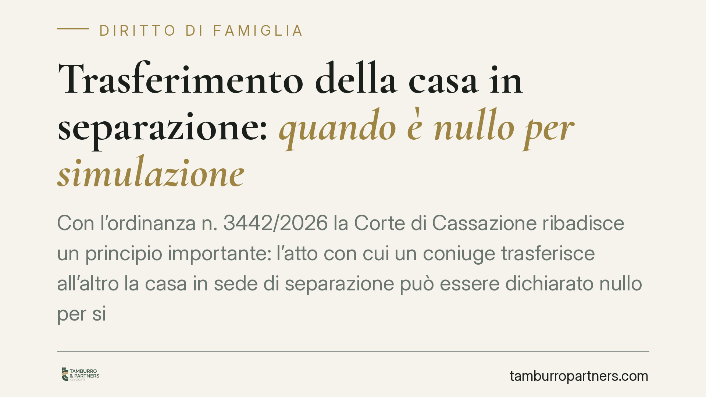

Trasferimento della casa in separazione: quando è nullo per simulazione
Con l'ordinanza n. 3442/2026 la Corte di Cassazione ribadisce un principio importante: l'atto con cui un coniuge trasferisce all'altro la casa in sede di separazione può essere dichiarato nullo per simulazione assoluta se serve solo a sottrarre il bene ai creditori. Il comportamento tenuto dalle parti dopo l'accordo diventa indizio decisivo del carattere fittizio del trasferimento.

Il caso
Nella prassi delle separazioni consensuali è frequente che i coniugi regolino la sorte della casa familiare: uno la trasferisce all'altro, spesso a compensazione di altri obblighi economici. Fin qui nulla di anomalo. Il problema nasce quando quel trasferimento non riflette una reale volontà di modificare la titolarità del bene, ma serve a metterlo al riparo dai creditori di uno dei due.
La Corte di Cassazione, con l'ordinanza n. 3442/2026, ha confermato che in questi casi l'atto può essere colpito da nullità per simulazione assoluta. In termini semplici: le parti dichiarano di volere un effetto (il passaggio di proprietà) che in realtà non vogliono affatto. Il coniuge "cedente" continua a comportarsi come proprietario, e il trasferimento resta solo sulla carta.
Inquadramento normativo
Il riferimento è l'art. 1414 del codice civile, che disciplina la simulazione. Al primo comma stabilisce che il contratto simulato non produce effetto tra le parti. La simulazione è assoluta quando i contraenti non vogliono in realtà alcun contratto: la proprietà, cioè, non passa mai davvero al coniuge beneficiario.
La prova di questo accordo occulto raramente è documentale. Per questo la Cassazione valorizza le presunzioni previste dall'art. 2729 cod. civ.: il giudice può risalire al carattere fittizio dell'atto partendo da fatti noti, purché gravi, precisi e concordanti. Tra questi rientra il comportamento successivo delle parti. Se, dopo il trasferimento, il coniuge "cedente" continua a pagare le spese, a percepire i canoni, a disporre dell'immobile come se fosse ancora suo, questi elementi possono dimostrare che l'atto era solo apparente.
Cosa cambia in concreto
L'ordinanza ha ricadute su due fronti.
Per i creditori di uno dei coniugi, la pronuncia conferma uno strumento di tutela. Non è necessario dimostrare direttamente l'accordo simulatorio: è sufficiente allegare una serie coerente di indizi che rendano credibile la finzione. Il fatto che l'atto sia stato inserito in un verbale di separazione omologato dal tribunale non lo mette al riparo dall'accertamento della simulazione.
Per i coniugi che regolano davvero la casa in sede di separazione, il rischio è di vedersi contestare un accordo genuino solo perché non hanno curato la coerenza dei comportamenti successivi. Un trasferimento reale deve essere seguito da fatti reali: chi acquista la proprietà deve poi comportarsi da proprietario.
È bene distinguere questo scenario dall'azione revocatoria (art. 2901 cod. civ.), che presuppone un atto valido ma pregiudizievole per il creditore. Qui, invece, l'atto è radicalmente inefficace perché mai voluto: le conseguenze e i presupposti probatori sono diversi.
Cosa fare in concreto
- Documentate la realtà del trasferimento. Se l'accordo è genuino, curate che il passaggio abbia riscontri concreti: intestazione delle utenze, pagamento di spese e imposte, effettivo godimento del bene da parte del nuovo titolare.
- Evitate accordi meramente "di facciata". Un trasferimento pensato solo per sottrarre l'immobile ai creditori è nullo e non offre alcuna protezione reale.
- Se siete creditori, raccogliete gli indizi. Verificate chi paga le spese, chi utilizza l'immobile, chi ne trae i frutti: sono elementi che il giudice può valutare come presunzioni.
- Fate valutare l'operazione prima di firmare. In sede di separazione consensuale, la clausola sulla casa va calibrata con attenzione agli assetti patrimoniali complessivi e alle posizioni debitorie.
- Ricostruite la cronologia dei fatti. Nelle controversie su simulazione, la sequenza temporale tra l'insorgere del debito e il trasferimento è spesso decisiva.
Conclusione
La separazione non è uno spazio franco rispetto ai diritti dei terzi. Un trasferimento immobiliare inserito negli accordi tra coniugi resta esposto all'accertamento della simulazione quando i comportamenti concreti smentiscono ciò che l'atto dichiara. La coerenza tra ciò che si scrive e ciò che si fa è, in questa materia, la migliore forma di prevenzione del contenzioso.
---
*Contributo informativo a cura di Tamburro & Partners - Avv. Giuseppe Tamburro. Non costituisce parere legale.*
Ogni famiglia ha il suo equilibrio.
Separazione, divorzio, affidamento, assegno: se vuoi un confronto riservato su una specifica situazione, scrivi allo studio. Ti rispondiamo entro un giorno lavorativo.